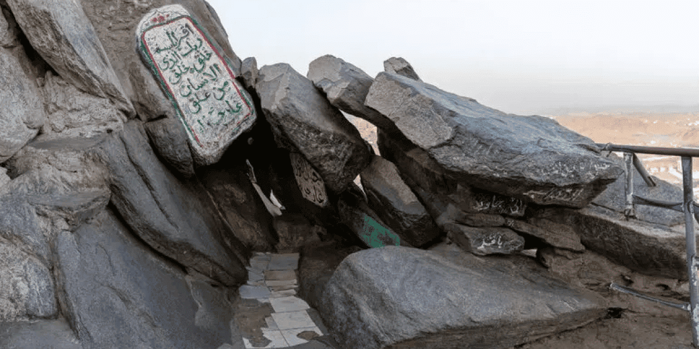

❓ Did You Know?

What was the first Surah revealed in the Qur’an?
Answer: Surah Al-Alaq (Surah 96), Verses 1–5
📖 Revelation Background
The first revelation from Allah ﷻ to Prophet Muhammad ﷺ came in the **Cave of Hira** near Makkah, during the sacred month of Ramadan. The Prophet ﷺ was 40 years old and used to meditate in solitude, reflecting on the Creator and the state of his people.
🌟 The Verses Revealed:
1. Read in the name of your Lord who created.
2. Created man from a clot.
3. Read, and your Lord is the Most Generous—
4. Who taught by the pen—
5. Taught man that which he knew not.
📝 Explanation:
These verses from Surah Al-Alaq mark the beginning of divine revelation and signify the importance of **knowledge (‘ilm)** in Islam. The command “Iqra” (Read!) shows that Islam is a religion deeply rooted in literacy, learning, and reflection.
The verse “Created man from a clot” highlights the humble origin of man, reminding us of our dependence on the Creator. It also signifies the miracle of life created from a simple substance.
The phrase “Taught by the pen” draws attention to the **value of writing and preserving knowledge**. It was through the pen that knowledge was spread, laws were written, and civilizations advanced.
The revelation was a moment of awe and intensity for the Prophet ﷺ. When Jibreel (Gabriel) came to him in the cave and asked him to read, the Prophet ﷺ replied, “I cannot read.” The angel repeated the command thrice, after which the first five verses were revealed.
💡 Significance:
- This was the **first communication from Allah** to mankind after a long period of silence since Prophet Isa (Jesus) عليه السلام.
- It defines the beginning of the **final message** and the rise of the **Seal of the Prophets**.
- It placed emphasis on **reading, education, and enlightenment** — core Islamic values.
Surah Al-Alaq reminds us that knowledge is sacred, and with it comes responsibility. The more we learn, the closer we should get to humility and submission to Allah.